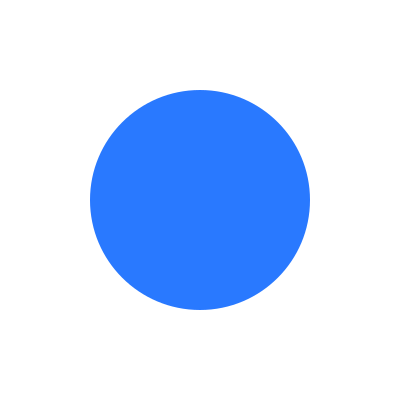
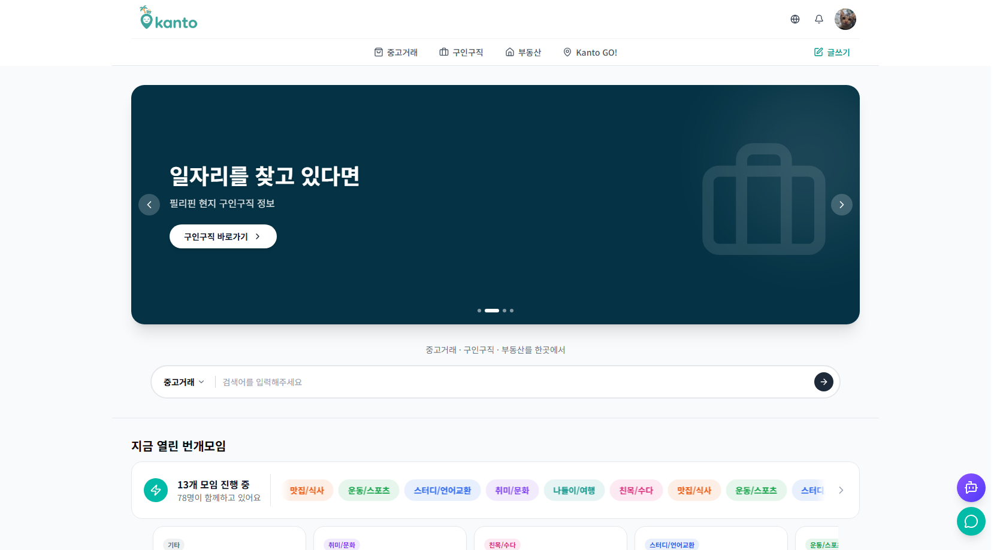

01. About Me

팀을 이끄는 끈기
몰입한 일에는
끈기 있게 매진하며, 팀의 분위기를 조성하는 역할에서 보람을
느낍니다. 문제를 만나면 방식을 가리지 않고 고민해 문서로
정리합니다.
AI 도구의 체계적 활용
팀에
필요한 내부 규칙·문서화·보고서 초안 자동화에 AI를 활용해,
팀의 토큰 사용 효율과 개발 시간을 함께 단축시켰습니다.
체계적인 업무 습관
어떤
작업이든 먼저 설계를 고민하고, 체계가 없다면 스스로
만듭니다. 군 복무 중 초급 장교의 위치에서도
작전수행실(AOC) 업무를 체계화한 경험이 있습니다.
교육
사용 스킬
개발 프로젝트
개인 프로젝트
2026.01 - 진행중
DoHyuk.dev
개인 기술 블로그
- 바닐라 JS 기반 MPA 블로그
- 마크다운 블록 단위 프리뷰 npm 패키지 직접 개발·배포 (8.2배 성능 개선)
- 게시글 CRUD
- 임시저장·휴지통 상태 머신
- 이미지 지연 업로드 패턴

팀 프로젝트 · 4인
2026.05 - 2026.07
Kanto
필리핀ㆍ한인 생활 플랫폼
중고거래 · 부동산 · 구인구직 · 모임
- 실시간 1:1 채팅 시스템 구현 (Supabase Realtime)
- KTS·KPPS(망고 지수) 신뢰도·인기 점수 시스템 설계
- 관리자(Admin) 페이지 — 감사 로그·권한 체계, TanStack Query 리팩터링
- Redis(Upstash) 기반 로그인 보안
- 공통 디자인 시스템 구축 (WCAG 2.1 AA)

개인 프로젝트
2026.03 - 2026.04
ESLint-KR
가이드 사이트
ESLint 공식홈페이지는 한국어 지원 X
- ESLint v9 Flat Config 기준 한국어 가이드 콘텐츠 (공식 문서엔 없는 자료)
- 자체 AI 코드 리뷰 도입 CODE_REVIEW.md로 P0~P3 우선순위화 후 반영
- SPA 딥링크 404 문제 해결 (spa-github-pages 패턴) + CI·주간 스모크 테스트 구축
개인 프로젝트
2026.05
Frontie
프론트엔드 학습용 AI 챗봇
- Groq·Gemini·Cerebras 멀티 LLM 스트리밍 챗봇 (실시간 모델 전환)
- 이미지 첨부 + 비전 멀티모달 지원
- Lighthouse 성능 점수 48 → 75점 개선 (코드 스플리팅·dynamic import·memo)
Kanto
필리핀 한인을 위한 통합 생활 플랫폼
- 개발 인원 팀 프로젝트 · 4인
- 플랫폼 Web
- 개발 기간 2026.05 - 2026.07
- 결과 파이널 1위
개발 환경
- 언어 TypeScript
- 프레임워크 Next.js 16 · React 19 · Tailwind CSS · shadcn/ui
- DB PostgreSQL(Supabase)
- 보안 Redis(Upstash) 레이트리밋 · Node.js crypto(URL ID 암호화)
- 라이브러리 Zustand · TanStack Query · next-intl
- AI/LLM Groq · Cerebras · Gemini · OpenAI
- API Supabase REST · Realtime API · Xendit · Google Maps · MyMemory · Notion API · Nodemailer(Gmail SMTP)
- 배포/인프라 Vercel · GitHub Actions(CI/CD)
- 모니터링 Sentry
